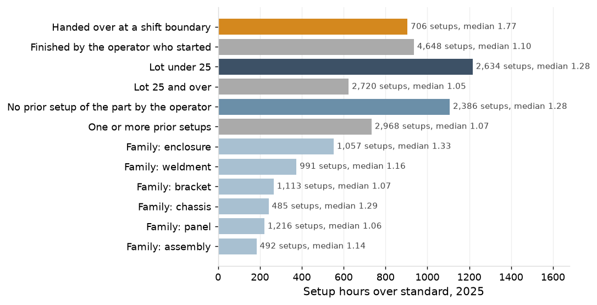
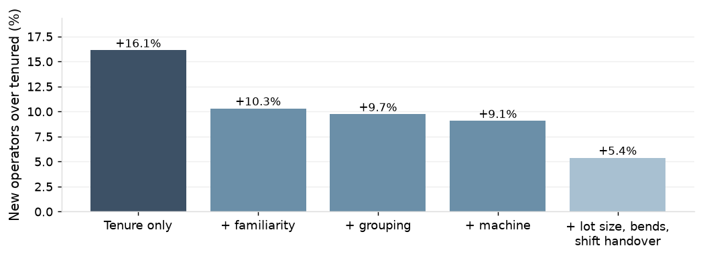

Brake setups ran 1,842 hours over standard in 2025: 35 hours a week and 11% of brake machine time.
The median setup runs at 1.16 of standard and the 90th percentile at 2.07; the ratios are the same in the first quarter and in Q2 to Q4.

Brake setup hours under 104 a week, from 117 in 2025. Measured levers: top 12 part-operations at standard 7.3 hours a week; repeat setups assigned to an operator who has set the part up 4.4; shift-handover standard 1.2; 12.9 in all.

| Action | Owner | When |
|---|---|---|
| Setup reduction on the top 12 part-operations | Brake supervisor, manufacturing engineering | May 2026 |
| Assign repeat setups to an operator who has set the part up before | Brake supervisor | February 2026 |
| Shift-handover standard at the brakes: the starting operator finishes the setup, or a written handover at the machine | Brake supervisor | February 2026 |
| Correct the setup standard on lots under 25 pieces | Manufacturing engineering | March 2026 |
| Refresh the stale standards and set the newer lasers' run standards to measured | Manufacturing engineering, estimating | April 2026 |
Measured baseline for 2025: 6,077 brake setup hours against 4,235 standard. Measured potential: 12.9 brake hours a week from the three capacity levers, 4.1% of brake machine time. P8 carries the hours released.
Weekly brake setup hours, and setup overrun hours by condition once the standards are corrected, on the operations dashboard.